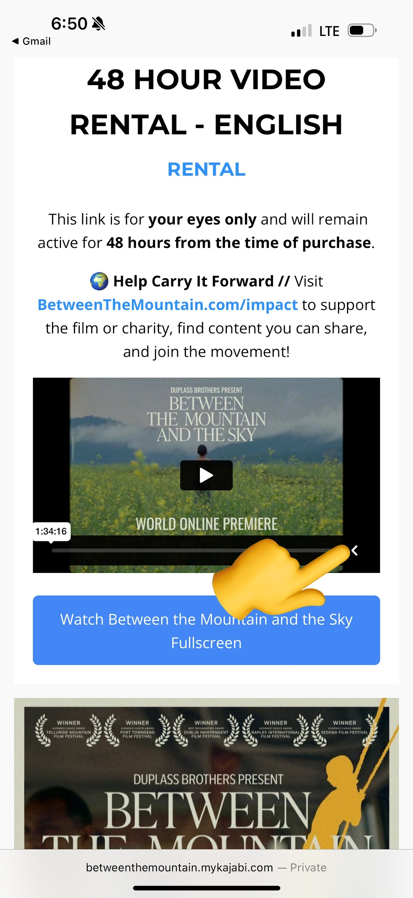
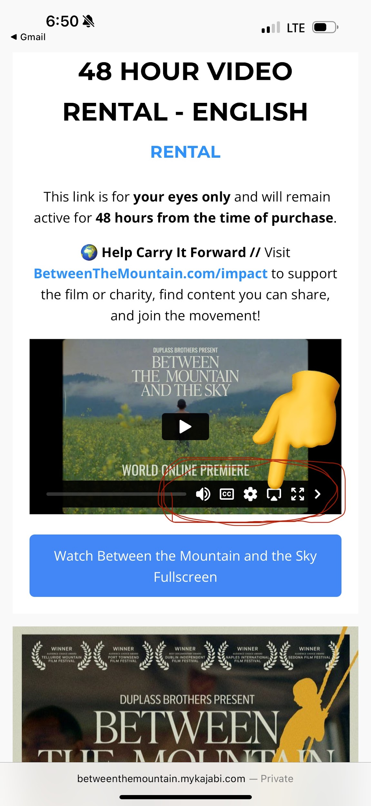
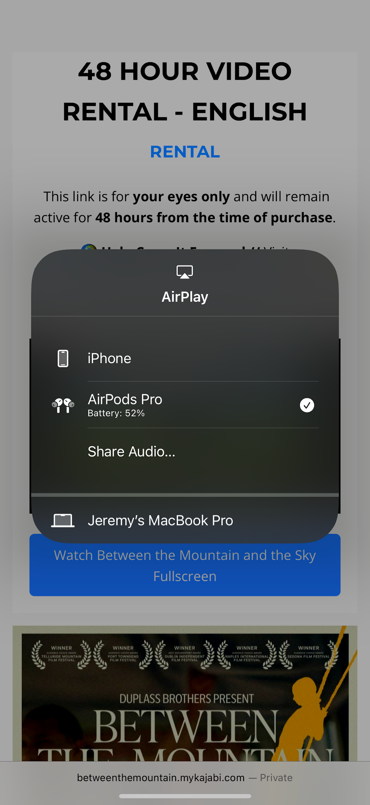
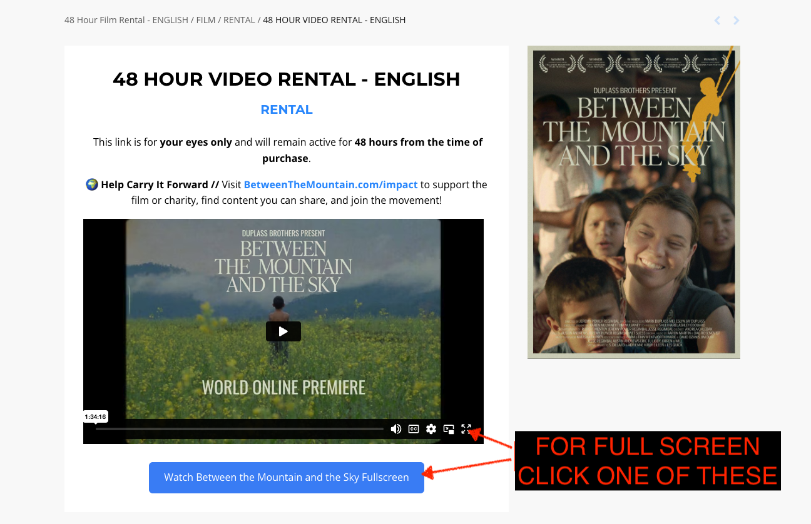

How do I cast from my phone or iPad to my Smart TV?
Streaming & CastingTap the ">" button at the bottom right of the video to open the menu options.

Once the menu opens, tap the AirPlay button (the screen icon with a triangle).

Select your TV from the list of available devices.

That's it! The film should now be playing on your TV. If you're having trouble, make sure both devices are connected to the same Wi-Fi network and try again.
How do I play the film in full screen?
PlaybackTry a different browser. Playback issues are most often caused by the browser itself. Switch between Chrome, Firefox, Safari, or Edge to see if that resolves it.
Use the full screen buttons. Look for the full screen controls at the bottom of the video player.

Don't see the controls? Tap the ">" button to reveal the hidden menu, then use the full screen button from there.
I can't find my password or the link to watch
Account AccessNo worries - you can access the film and reset your password using the links below:
If you're still having trouble after resetting your password, please reach out to us and we'll make sure you can watch the film.
"Due to privacy issues, this video is not available"
TroubleshootingThis error usually happens when browser cookie or privacy settings are blocking the video from playing. Here are a few ways to fix it:
Try a different browser. Switch between Chrome, Firefox, Safari, or Edge.
Try Private / Incognito mode. Open the link in an incognito or private browsing window. If the video plays there, the issue is your browser's privacy settings.
Adjust your browser's privacy settings:
Chrome: Go to Settings > Privacy and Security > Third-party cookies, then select "Block third-party cookies in Incognito Mode" (allow them in normal browsing).
Safari: Go to Safari > Preferences > Privacy and uncheck "Website tracking" and "Cookies and website data."
Don't worry - we'll make sure you get to watch the film. If none of the above works, reach out to us.
Still need help?
ContactWe're here to help. Reach out to us and we'll make sure you get to watch the film.